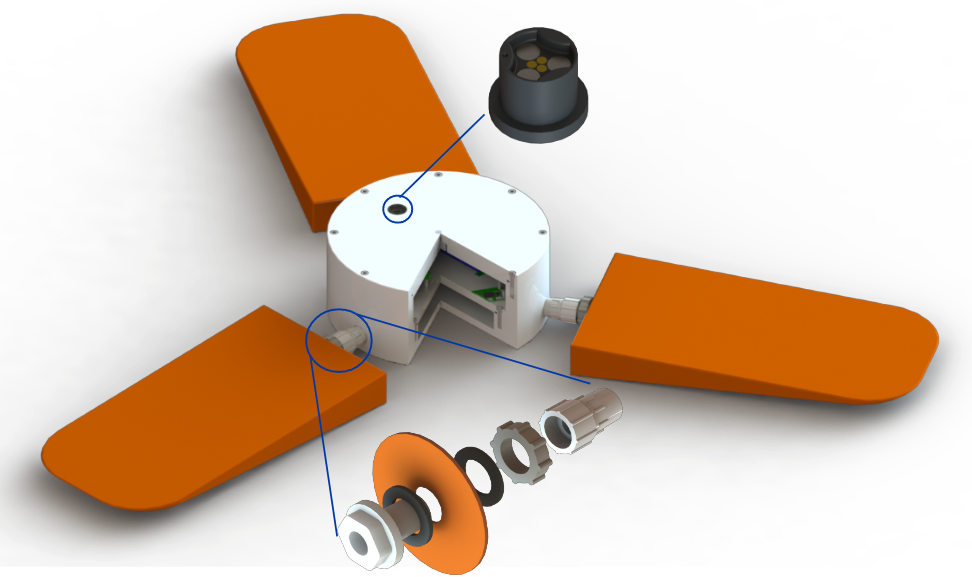
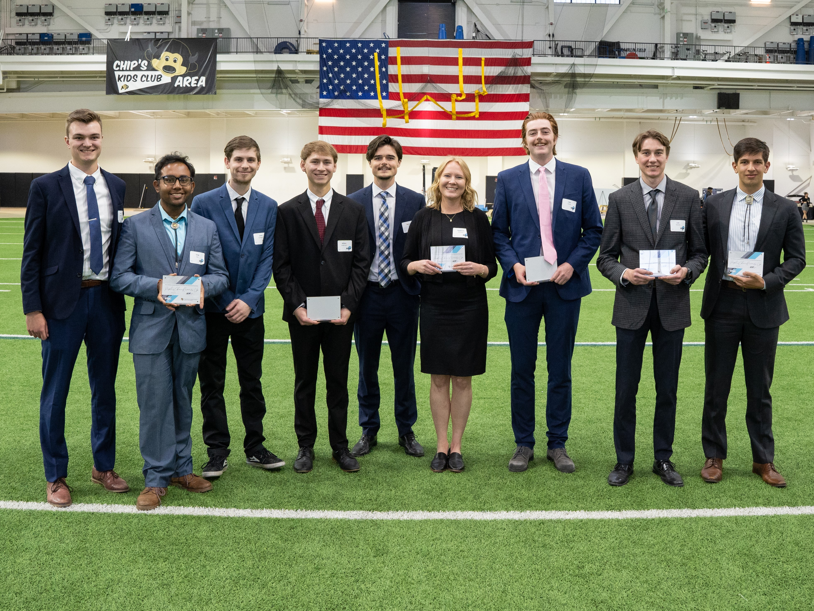

Aircraft-Automatic Deployable Flight Recorder
In Collaboration with Boeing Inc. and the University of Colorado Boulder
View the full team here
Capstone Project; September 2022 - May 2023
Background
Following the disappearance of Malaysian Airlines Flight Flight 370, the Federal Aviation Administration required the implementation of a safe method for securing flight data on passenger aircraft. Due to differing international policy on streaming data from aircraft, Boeing Inc. tasked our team with developing a modular flight-recorder capable of collecting, collating, and securing the data generated generated during a flight.
Overview of Our Solution
The Aircraft-Automatic Deployable Flight Recorder (A-ADFR) is capable of continually storing over 48 hours of encrypted flight data. Its small, modular design allows it to be stored in the fuselage, wings, flight deck, the tail of the aircraft, allowing for high redundancy. The device deploys when commanded by external control computers onboard the aircraft, or when its internal pressure sensor reads a submerged to a depth 4 ± 1 meters. Once deployed the A-ADFR will transmit its location data on a 406 MHz frequency band to the COSPAS-SARSAT satellite network for over 72 hours so that it may be located by Search and Rescue efforts.
Electronic System
My main contribution to this project was the end-to-end development and implementation of the electronic system. I designed a PCB that powers all peripheral onboard electronics, automatically switches between the aircraft and internal power supply, controls the airbag deployment, and charges/manages the onboard Lithium Polymer battery. There is also a Raspberry Pi onboard which manages and stores the data streamed from the aircraft. The system also contains a transceiver and an antenna for the aforementioned radio communication capabilities.
Design of Custom PCB
PCB Functions:
- Regulates and distributes 5V DC power to onboard Raspberry Pi, sensors, and radio circuitry
- Charges and manages auxiliary battery
- Automatically alternates between aircraft power supply and auxiliary power source based upon availability
- Provides I2C Bus for all peripherals to communicate
- Control circuitry for detonating Guanidine-Nitrate chemical reaction for airbags
Bill of Materials

Housing and Airbags
The mechanical system is comprised of a cylindrical housing and three radially-symmetric airbags. The airbags serve multiple functions, including assisting the housing in breaking free from the debris of the crashed aircraft, enhancing visibility for locating the device, and providing buoyancy. Within the housing there are two separate chambers, one for electronics and one for facilitating the chemical reaction which inflates the airbags. The housing is rated to an IPX8 waterproofing standard is also self-buoyant, even in the event of multiple ruptured airbags. The Airbag-to-Housing connection consists of swiveling one-way valves, letting each airbag inflate while preventing water ingress to the housing in the event of a rupture.
Awards!
Our team was voted the runner up in the People's choice award at the CU Boulder Design Expo!
